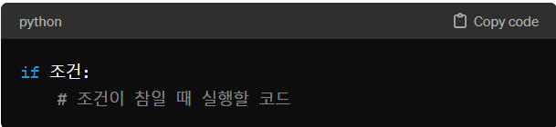
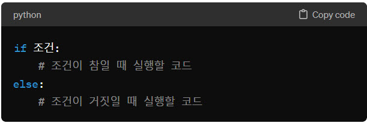
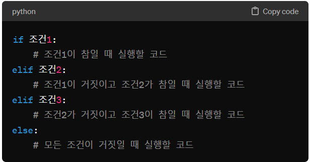

파이썬 if문 3가지 스타일에 대해 설명해주세요
파이썬 if문 3가지 스타일에 대해 설명해주세요
 파이썬의 if 문은 조건을 평가하여 그 조건이 참(True)일 때만 특정 코드 블록을 실행하도록 하는 조건문입니다. 파이썬에서는 주로 세 가지 스타일의 if 문을 사용할 수 있습니다.
파이썬의 if 문은 조건을 평가하여 그 조건이 참(True)일 때만 특정 코드 블록을 실행하도록 하는 조건문입니다. 파이썬에서는 주로 세 가지 스타일의 if 문을 사용할 수 있습니다.
기본 사용법 :
- if문 
- if-else문 
- if-elif-else문 
예제 :
- if문
- if-else문
- if-elif-else문
age = 20
if age >= 18:
print("You are an adult.")
age = 16
if age >= 18:
print("You are an adult.")
else:
print("You are a minor.")
score = 75
if score >= 90:
print("Grade: A")
elif score >= 80:
print("Grade: B")
elif score >= 70:
print("Grade: C")
else:
print("Grade: F")
# 정수 설정
num = 9
# 정수가 짝수인지 판단
if num % 2 == 0:
print(f"{num}은(는) 짝수입니다.")
# 두 개의 정수 설정
num1 = 15
num2 = 22
# 두 정수를 비교하여 큰 값 출력
if num1 > num2:
larger_value = num1
else:
larger_value = num2
print(f"두 정수 중 큰 값은 {larger_value}입니다.")
# 계절 입력 설정값 예제 (직접 입력 대신 설정값 사용)
season = "가을" # 사용자 입력 대신 설정값 사용
# 계절에 따른 특징 출력
if season == "봄":
print("봄은 꽃이 피는 계절입니다.")
elif season == "여름":
print("여름은 더운 날씨와 함께 수박과 같은 여름 과일이 많은 계절입니다.")
elif season == "가을":
print("가을은 낙엽이 지고, 서늘한 바람이 부는 계절입니다.")
elif season == "겨울":
print("겨울은 눈이 오고, 크리스마스가 있는 계절입니다.")
else:
print("잘못된 계절을 입력하셨습니다.")
연습 문제
- 사용자로부터 숫자 하나를 입력받아, 그 숫자가 10보다 큰지, 작은지 또는 같은지를 출력하는 프로그램을 작성하세요.
- 사용자로부터 숫자 하나를 입력받아, 그 숫자가 짝수인지 홀수인지를 출력하는 프로그램을 작성하세요.
- 사용자로부터 점수(0~100)를 입력받아, 해당 점수가 A, B, C, D, F 중 어느 성적인지를 출력하는 프로그램을 작성하세요. 조건은 다음과 같습니다.
- 90점 이상: A 학점
- 80점 이상: B 학점
- 70점 이상: C 학점
- 60점 이상: D 학점
- 60점 미만: F 학점
- 다음 코드는 SyntaxError가 발생합니다. 올바른 코드로 수정하세요
- 리스트 work_day에 '화요일'이 포함되었다면 '화요일 근무!'를 출력하는 코드를 작성하세요
- 점수(score)가 60점이상이면 '합격', 60점 미만이면 '불합격'을 출력하는 코드를 작성하세요
- 다음 코드는 SyntaxError가 발생합니다. 올바른 코드로 수정하세요
number = int(input("숫자를 입력하세요: "))
# 여기에 if 문을 작성하세요.
number = int(input("숫자를 입력하세요: "))
# 여기에 if 문을 작성하세요.
score = int(input("점수를 입력하세요: "))
# 여기에 if 문을 작성하세요.
a = 10
if (a >10)
print('a는 20보다 큽니다.')
work_day = ['월요일','화요일','수요일','목요일']
# 여기에 if 문을 작성하세요.
score = 95
# 여기에 if 문을 작성하세요.
a = 10
else:
print('a 변수의 값은 10이 아닙니다.')